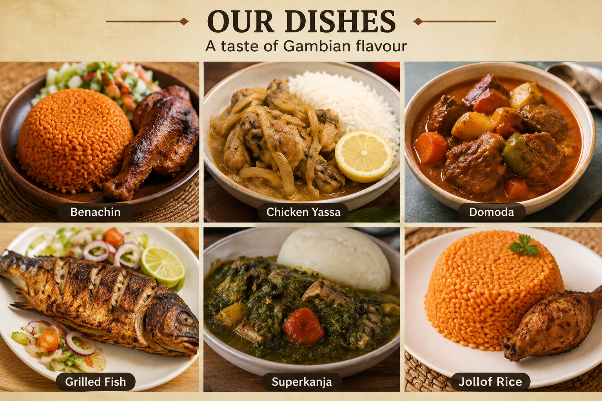

Main Dishes
Our main dishes are inspired by the flavours we grow up enjoying. We carefully prepare each meal to give you a taste of authentic Gambian cooking while making sure there is something everyone can enjoy.
- Chicken Yassa
- Grilled Fish
- Super Kanja
- Benachin
- Domoda
- Jollof Rice

My Top Four
These are my personal top four at Bantaba Kitchen. I choose them because they represent different flavours and cooking styles our customers will enjoy.
- Chicken Yassa
- Grilled Fish
- Domoda
- Super Kanja
Chicken Yassa comes first because of its combination of chicken, onions, and seasoning. Grilled fish comes second because it is a light option with smokey flavour. Then comes domoda because its rich peanut based sauce makes it a comforting and filling meal. Finally super kanja comes as fourth because it its a traditional gambian which mostly consist of seafood (which are rich in protein) in the it.